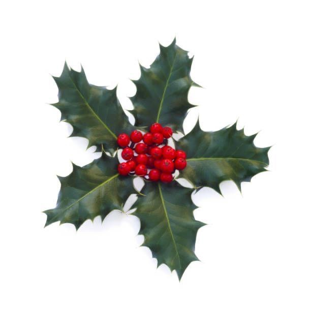
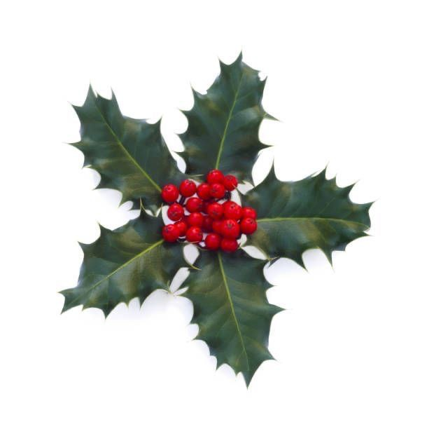

this little writing piece below is called "The Opposites Game" by Brendon Constantine. It was one of the first poems I'd immediately fallen in love with. I think you might like it too!
This day my students and I play the Opposites Game
with a line from Emily Dickinson. My life had stood
a loaded gun, it goes and I write it on the board,
pausing so they can call out the antonyms –
My : Your
Life : Death
Had stood ? : Will sit
A : Many
Loaded : Empty
Gun ?
Gun.
For a moment, very much like the one between
lightning and it’s sound, the children just stare at me,
and then it comes, a flurry, a hail storm of answers –
Flower, says one. No, Book, says another. That's stupid,
cries a third, the opposite of a gun is a pillow. Or maybe
a hug, but not a book, no way is it a book. With this,
the others gather their thoughts
and suddenly it’s a shouting match. No one can agree,
for every student there’s a final answer. It's a song,
a prayer, I mean a promise, like a wedding ring, and
later a baby. Or what’s that person who delivers babies?
A midwife? Yes, a midwife. No, that’s wrong. You're so
wrong you’ll never be right again. It's a whisper, a star,
it's saying I love you into your hand and then touching
someone's ear. Are you crazy? Are you the president
of Stupid-land? You should be, When's the election?
It’s a teddy bear, a sword, a perfect, perfect peach.
Go back to the first one, it's a flower, a white rose.
When the bell rings, I reach for an eraser but a girl
snatches it from my hand. Nothing's decided, she says,
We’re not done here. I leave all the answers
on the board. The next day some of them have
stopped talking to each other, they’ve taken sides.
There's a Flower club. And a Kitten club. And two boys
calling themselves The Snowballs. The rest have stuck
with the original game, which was to try to write
something like poetry.
It's a diamond, it's a dance,
the opposite of a gun is a museum in France.
It's the moon, it's a mirror,
it's the sound of a bell and the hearer.
The arguing starts again, more shouting, and finally
a new club. For the first time I dare to push them.
Maybe all of you are right, I say.
Well, maybe. Maybe it's everything we said. Maybe it’s
everything we didn't say. It's words and the spaces for words.
They're looking at each other now. It's everything in this room
and outside this room and down the street and in the sky.
It's everyone on campus and at the mall, and all the people
waiting at the hospital. And at the post office. And, yeah,
it's a flower, too. All the flowers. The whole garden.
The opposite of a gun is wherever you point it.
Don’t write that on the board, they say. Just say poem.
Your death will sit through many empty poems


 
